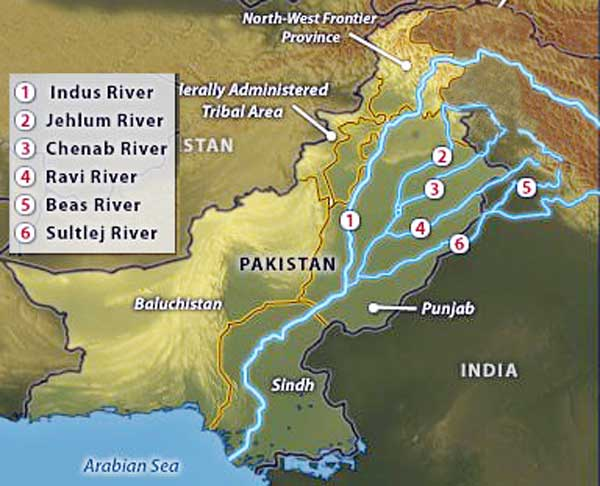
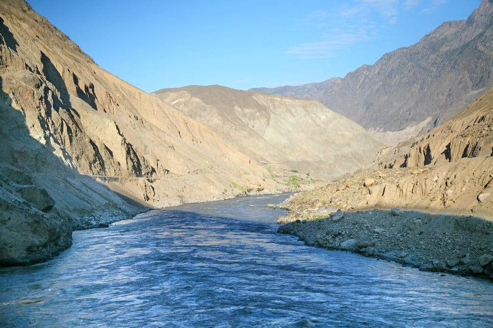

- Home
- Mountains
- Velleys
- Deserts
- Rivers

The rivers of Pakistan
The river system of Pakistan originates from the snow-covered Himalayan and the Karakoram range. The system
comprises mainly five rivers that pass mostly through the Punjab province; therefore the name 'Punjab' —
'panj' meaning five and 'aab' meaning water. The five rivers of Pakistan are Jhelum, Chenab, Ravi, Sultej
and Indus.
Jhelum
River Jhelum is nearly 774 kilometres long and is the tributary of River Chenab. Jhelum originates from the
south-eastern part of Kashmir valley and flows through Srinagar before entering Pakistan.
Along its journey, it is joined by the largest tributary of the Neelam River near Muzaffarabad. River Jhelum
also has many dams and barrages constructed on it, with one of the dams being Mangla which is the world's
largest earth-fill dam and was constructed in 1967. It has a storage capacity of nearly 5.9 million
acre-feet. Rasul Barrage is also built on Jhelum River as well as Trimmu Barrage.
Sutlej
Sutlej flows through the historic crossroad region of Punjab in northern India and Pakistan. It is located
north of the Vindhya Range, south of the Hindu Kush segment of the Himalayas, and east of the Central
Sulaiman Range in Pakistan. Some 550 kilometres long, Sutlej is also called as the Red River.
Chenab
The Chandra and Bhaga rivers in the upper Himalayas join to form the Chenab River. Chenab flows through
Jammu and Kashmir. It is then joined by the Jhelum River at Trimmu, a flood control mechanism near Jhang and
on moving further it merges with the Sutlej near Uch Sharif in Pakistan. Chenab River is nearly 960
kilometres long.
Ravi
River Ravi, like many other rivers of the region, originates in the Himalayas. After it flows through
south-west region of Indian Punjab, it moves along the Indo-Pak border and enters Pakistan and merges with
Chenab. River Ravi is nearly 720 kilometres long. It's also called 'The river of Lahore' since the city of
Lahore is located at Ravi's eastern bank.
Indus
The Indus river is the longest river in Pakistan, originating from the Himalayan region. It is also the
world's 21st largest river in terms of annual water flow. With a total length of 3,180 kilometres, it is
also Pakistan's lifeline.
Indus River originates from the Tibetan plateau near Lake Mansarovar in China. It then runs through Jammu
and Kashmir, enters the Gilgit-Baltistan (formerly Northern Areas of Pakistan) region and flows through the
entire length of the country and merges with the Arabian Sea. The Indus River fulfils the water requirements
of Pakistan and is the main support for agriculture. The main tributaries of Indus are Astor River, Balram
River, Gilgit River, Kabul River, Tanubal River and the Zanskar River.
